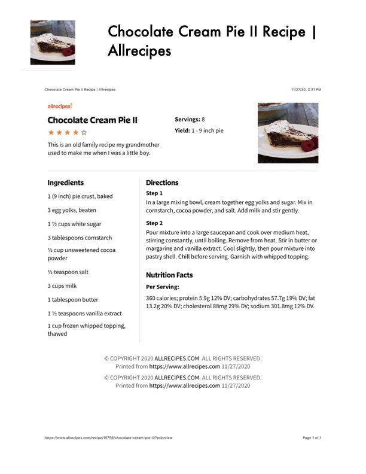

Chocolate Cream Pie II

Original cookbook page 124
Ingredients
- 1(9 inch) pie crust, baked
- 3 egg yolks, beaten
- 1% cups white sugar
- 3 tablespoons cornstarch
- 2 cup unsweetened cocoa
- powder
- Ya teaspoon salt
- 3 cups milk
- 1 tablespoon butter
- 1% teaspoons vanilla extract
- 1 cup frozen whipped topping,
- thawed
- Step1
- In a large mixing bowl, cream together egg yolk
- cornstarch, cocoa powder, and salt. Add milk ar
Instructions
- In a large mixing bowl, cream together egg yolks and sugar. Mix in cornstarch, cocoa powder, and salt. Add milk and stir gently.
- Pour mixture into a large saucepan and cook over medium heat, stirring constantly, until boiling. Remove from heat. Stir in butter or margarine and vanilla extract. Cool slightly, then pour mixture into pastry shell. Chill before serving. Garnish with whipped topping.
Recipe #124 from collection